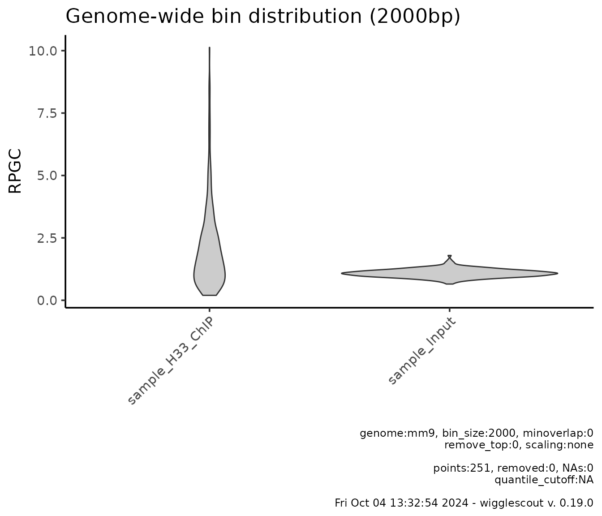
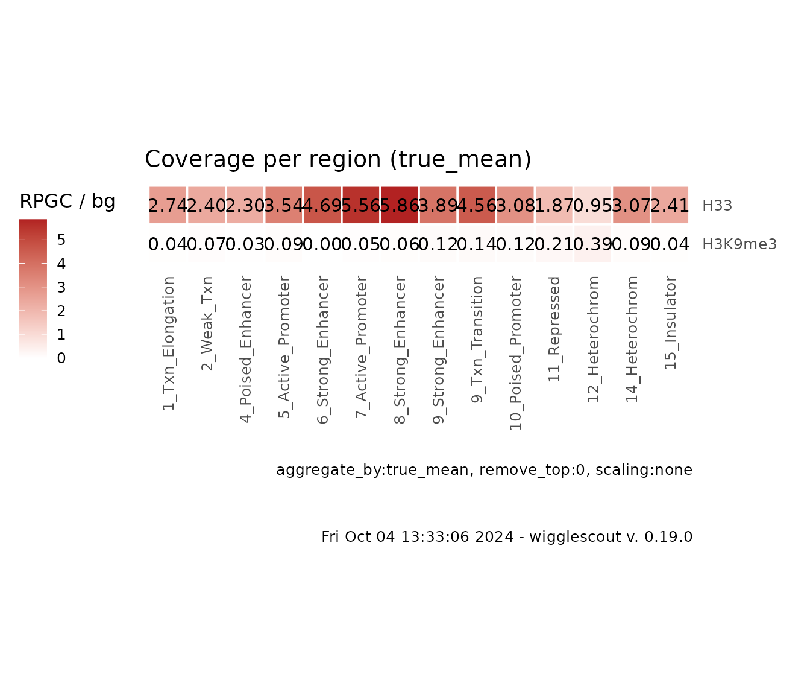
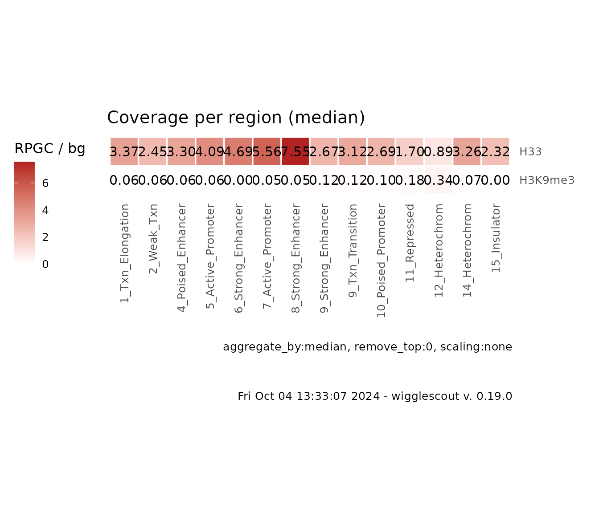
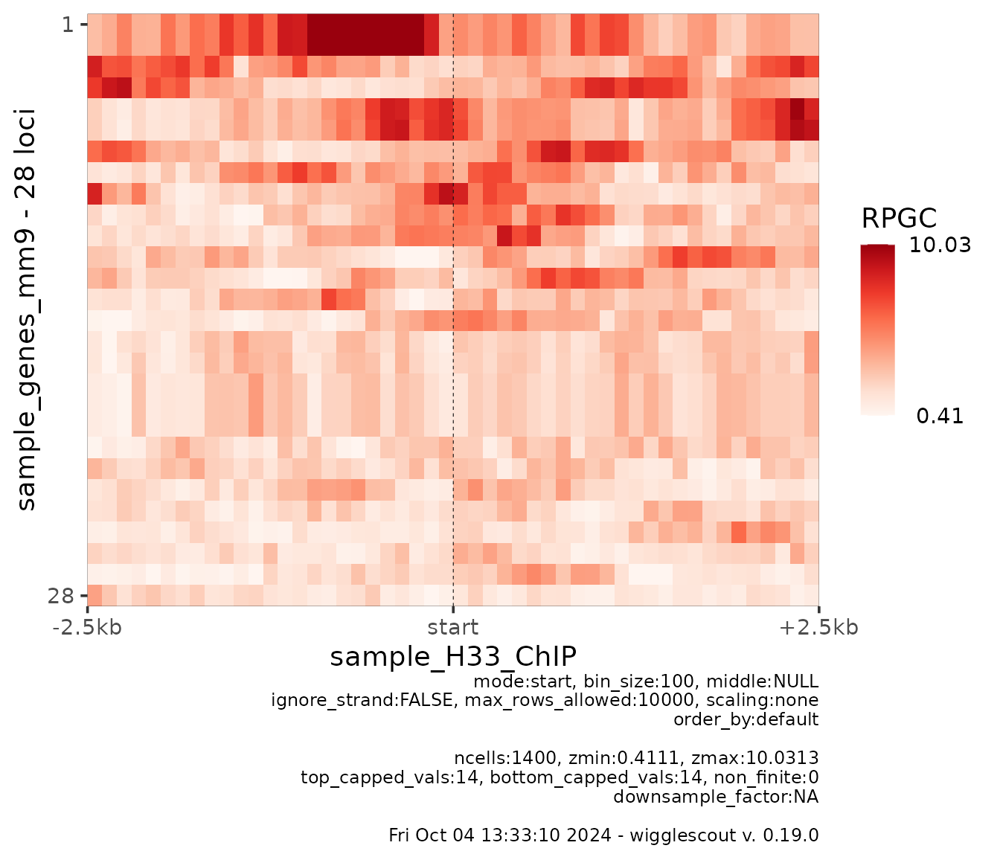
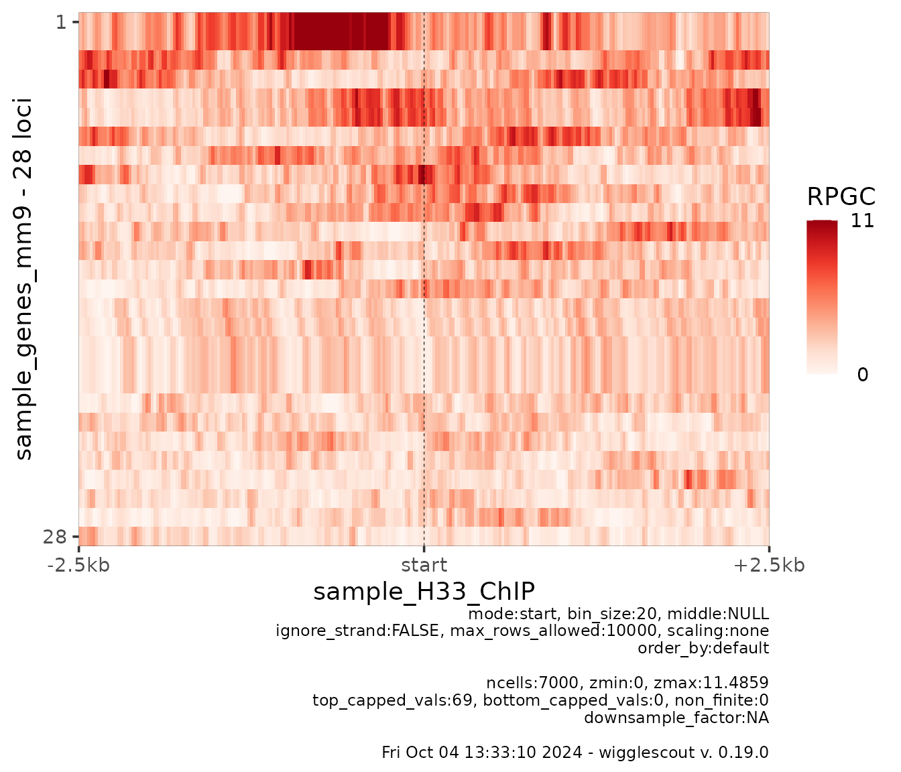
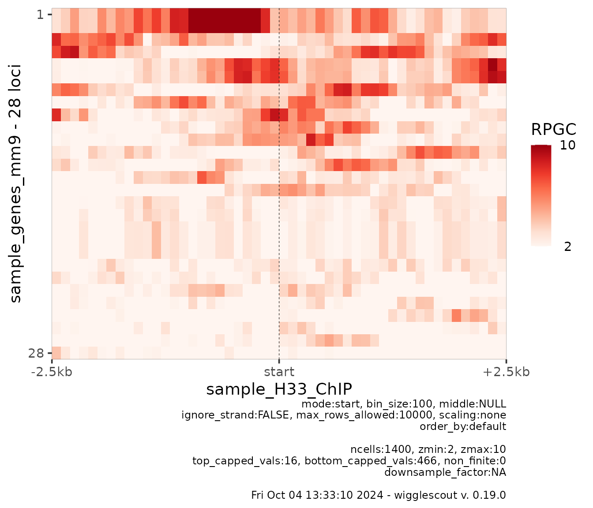
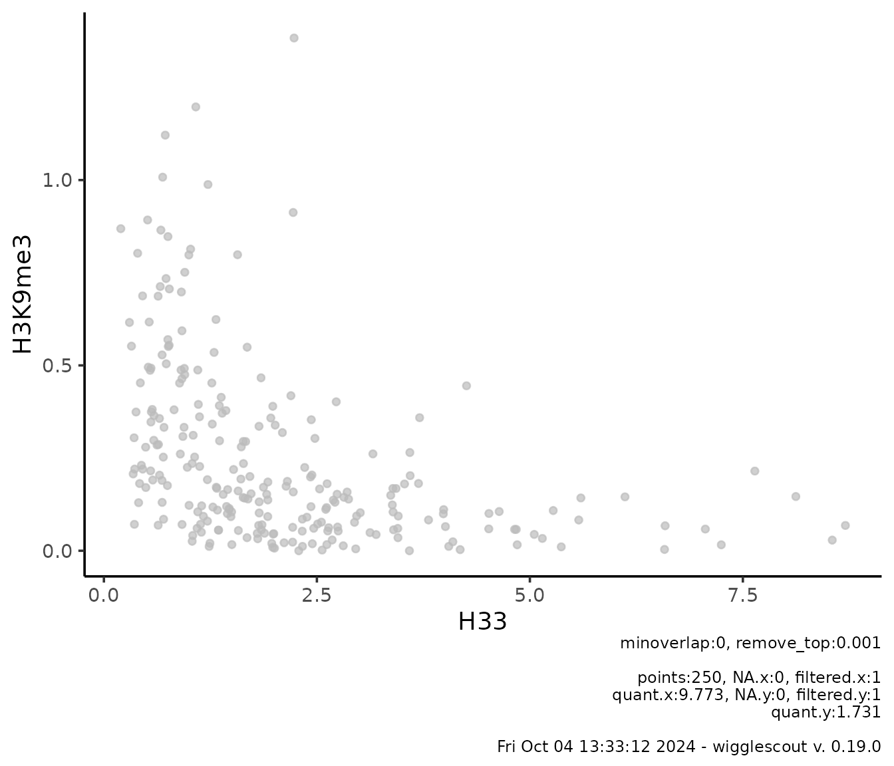

wigglescout provides a set of out-of-the-box functions
to visualize bigWig values genome-wide or on a defined set of loci:
-
plot_bw_bins_scatter. A genome-wide bin-based scatterplot. Needsgenomeandbin_sizeparameters. -
plot_bw_loci_scatter. A locus-based scatterplot. Needs alocifile orGRangesobject. -
plot_bw_bins_violin. A genome-wide bin-based violinplot. Needsgenomeandbin_sizeparameters. -
plot_bw_loci_summary_heatmap. Summarized heatmap over a categorized BED file. This works great with annotations like ChromHMM, but other BED files can be used, as long as their name field is meaningful (provides a category). An example could be agenes.bedfile where genes are labelled according to expression, low, med, high. -
plot_bw_profile. A profile plot over a set of loci. -
plot_bw_heatmap. A per-locus heatmap.
As you may have noticed, loci functions take as
parameter a loci value, which can be a BED file or a
GRanges object. If you provide a GRanges
object, chances are that you need to provide a label, as
there is no way to infer this from the GRanges object. On
the other hand, whenever bigWig or BED files are provided, they are
labeled by default with their names.
You can find more detailed information about these below.
Genome-wide plots
Bin-based genome-wide analysis is currently supported in two formats:
-
plot_bw_bins_violin. Makes a violin plot of one or more bigWig files. -
plot_bw_bins_scatter. Makes a scatter plot of two different bigWig files against each other.
Both plot types allow for background bigWig signal to be provided (i.e. input).
Violin plots
For a set of bigWig files, it is possible to visualize the genome-wide signal distribution. For example:
plot_bw_bins_violin(h33_chip, bin_size = 2000, selection = locus)Note that bin_size parameter influences the time any of
these functions take to run. Reasonable resolution for this is 5000 or
10000.
It is possible to plot several bigWig files at a time:
plot_bw_bins_violin(c(h33_chip, input_chip), bin_size = 2000, selection = locus)
Additionally, one can highlight bins that overlap with a certain set
of interest loci. This is done via the highlight
parameter:
plot_bw_bins_violin(
c(h33_chip, input_chip),
bin_size = 2000,
highlight = genes,
highlight_color = c("red", "red"), # It is possible to provide different colors
selection = locus
)It is also possible to provide a list of bigWig files to be used as background to normalize the bin values to. For instance, in the previous case, one could want to use the input values to normalize the H3.3 ChIP data:
# bg_bwfiles parameter is set now to input_chip
plot_bw_bins_violin(
h33_chip,
bg_bwfiles = input_chip,
bin_size = 2000,
highlight = genes,
highlight_color = c("red"),
selection = locus
)If norm_mode is provided, it is possible to
log-transform these values as well:
# bg_bwfiles parameter is set now to input_chip
plot_bw_bins_violin(
h33_chip,
bg_bwfiles = input_chip,
bin_size = 2000,
highlight = genes,
highlight_color = c("#000088"), # Colors can be also HTML codes
norm_mode = "log2fc",
selection = locus
)Genome-wide scatterplots
You can compare two signals against each other on a scatter plot. To
do so, you can use plot_bw_bins_scatter. This function
works very similarly to plot_bw_bins_violin but instead of
accepting an array of bigWig files, it accepts separate x
and y parameters and the corresponding optional
bg_x and bg_y, norm_mode_x,
norm_mode_y. You can see more details in the function
documentation.
One example would be looking at H3.3 versus H3K9me3 in this sample data:
plot_bw_bins_scatter(
x = h33_chip,
y = h3k9me3_chip,
bin_size = 2000,
selection = locus
)This is useful to see relationships between marks. In this case, bins where H3.3 signal is high, H3K9me3 signal is low and viceversa.
The same way as with plot_bw_bins_violin, it is possible
to specify a set of loci to highlight within the bins, and normalize to
given signals:
plot_bw_bins_scatter(
x = h33_chip,
bg_x = input_chip,
y = h3k9me3_chip,
bg_y = input_chip,
bin_size = 2000,
highlight = genes,
highlight_colors = "red",
highlight_label = "genes", # It is also possible to label the groups
norm_mode_x = "log2fc", # Each norm mode is provided separately
selection = locus
)Locus-specific plots
It is also possible to look at the ChIP data in a more specific way.
For this, elsasserlib provides the following functions:
-
plot_bw_bed_summary_heatmap: Summarizes the values across a BED file, using name field as category. -
plot_bw_profile: Creates a profile plot across a set of loci. -
plot_bw_heatmap: Creates a heatmap across a set of loci.
Summary heatmaps
These plots are meant to provide a genome-wide overview of the signal across different biologically-relevant categories. They get a list of bigWig files and a BED file as input. Each bigWig file will represent a row in the heatmap, and each cell will be an aggregate value of the corresponding bigWig file in a given category in the BED file, for example:
# ChromHMM is a genome-wide annotation according to epigenetics marks. Each
# locus is tagged by a category. And the amount of categories must be limited.
# In this case, it is fifteen.
chrom_values <- import(chromhmm, format = "BED")
head(chrom_values)
#> GRanges object with 6 ranges and 2 metadata columns:
#> seqnames ranges strand | name score
#> <Rle> <IRanges> <Rle> | <character> <numeric>
#> [1] chr15 102602601-102606600 * | 12_Heterochrom 0
#> [2] chr15 102606601-102607600 * | 11_Repressed 0
#> [3] chr15 102615401-102615800 * | 15_Insulator 0
#> [4] chr15 102615801-102616800 * | 11_Repressed 0
#> [5] chr15 102616801-102626600 * | 12_Heterochrom 0
#> [6] chr15 102626601-102627600 * | 11_Repressed 0
#> -------
#> seqinfo: 1 sequence from an unspecified genome; no seqlengths
plot_bw_loci_summary_heatmap(
c(h33_chip, h3k9me3_chip),
loci = chromhmm,
labels = c("H33", "H3K9me3")
)Since this example is reduced to a set of HOXC genes, you can see how H3.3 signal is high and H3K9me3 is generally low.
It is possible as in the previous types of plots to provide bigWig files as normalization / input tracks and use them in the same way as before:
plot_bw_loci_summary_heatmap(
c(h33_chip, h3k9me3_chip),
bg_bwfiles = c(input_chip, input_chip),
loci = chromhmm,
labels = c("H33", "H3K9me3")
)
How the values are aggregated
Since this function is aggregating the values, it is possible to
specify the way the per-locus values are aggregated. Default is
true mean. What it means is that all the coverage
values are binned together and the mean is performed as if each category
is one big locus. Another possibilities are: mean of
means (aggregate_by = "mean"), which will
calculate mean coverage per locus and then the aggregate value will be
the mean of those mean values, and median of means
(aggregate_by = "median"). Median per-locus coverage values
tend to be noisy, so a median of means could be useful in some
cases.
plot_bw_loci_summary_heatmap(
c(h33_chip, h3k9me3_chip),
bg_bwfiles = c(input_chip, input_chip),
loci = chromhmm,,
labels = c("H33", "H3K9me3"),
aggregate_by = "median" # Note this is a string value, not a function
)
Profile plots
Another way to look at how the ChIP data looks is to summarize a
profile across a set of loci. In order to do that you can use
the plot_bw_profile function:
plot_bw_profile(
c(h33_chip, h3k9me3_chip, input_chip),
loci = genes,
labels = c("H3.3", "H3K9me3", "Input")
)The default mode is called stretch, where start (3’ end)
and end (5’ end) of loci are aligned and the length of the
locus is stretched to a given pseudolength (middle
parameter). If this parameter is not given, the pseudolength will be
assigned as the median value of the length distribution of
loci, in an attempt to match a realistic length.
It is possible to align only 3’ ends, 5’ ends or center of loci, similarly to what formatting text alignment would do:
plot_bw_profile(
c(h33_chip, h3k9me3_chip, input_chip),
loci = genes,
labels = c("H3.3", "H3K9me3", "Input"),
mode = "start"
)It is also possible to specify the upstream and downstream lengths:
plot_bw_profile(
c(h33_chip, h3k9me3_chip, input_chip),
loci = genes,
labels = c("H3.3", "H3K9me3", "Input"),
mode = "center",
upstream = 3000,
downstream = 3000
)
plot_bw_profile(
c(h33_chip, h3k9me3_chip, input_chip),
loci = genes,
labels = c("H3.3", "H3K9me3", "Input"),
mode = "end",
upstream = 7000,
downstream = 3000,
show_error = TRUE # Turn error estimates on
)Heatmaps
Finally, it is possible to look at the profile across a set of loci in a per-locus way by looking at heatmaps.
plot_bw_heatmap(
h33_chip,
loci = genes
)This gene annotation includes some variants of the same genes that overlap a lot, so some of the rows look very similar or even like duplicates.
Most of the parameters are shared between
plot_bw_profile and plot_bw_heatmap making it
possible to arrange them on top of each other later on, so it is
possible to align them in different ways:
plot_bw_heatmap(
h33_chip,
loci = genes,
mode = "start",
upstream = 2500,
downstream = 2500
)
It is possible to specify bin_size to increase or
decrease resolution (this can also be done on profile plots):
plot_bw_heatmap(
h33_chip,
loci = genes,
mode = "start",
upstream = 2500,
downstream = 2500,
bin_size = 20
)
At this point, heatmap values are shown in order from maximum mean value across all the beans to lowest.
By default, colorscale is set to percentiles 0.01 and 0.99 of whole matrix range. You can set these values to fixed numbers. This is useful mostly to plot together several heatmaps with the same color scale. For example:
plot_bw_heatmap(
h33_chip,
loci = genes,
mode = "start",
upstream = 2500,
downstream = 2500,
bin_size = 100,
zmin = 2,
zmax = 10
)
It is also possible to change the color of the heatmap using any
RColorBrewer available palette:
plot_bw_heatmap(
h33_chip,
loci = genes,
bin_size = 100,
cmap = "RdYlBu"
)There is also a max_rows_allowed parameter that defaults
to 10000. This allows to plot large matrices by binning vertically the
heatmap and plotting the underlying mean associated, provided that a
screen or a reasonable screen will not be able to display all the data
points anyway. If the number of rows is larger than
max_rows_allowed, rows will be binned in a way that the
resulting plotted matrix will have max_rows_allowed height
and a warning will be shown. Since the matrix is not subsampled only,
but the underlying values averaged, this may result in a smoothened
effect in the image. This is a similar approach to how image resizing
works.
Plotting signal over precalculated GRanges
It is possible to plot the values already calculated in a
GRanges object by specifying the metadata columns used.
Essentially, anything calculated by bw_loci and
bw_bins functions can be passed to plot_gr
functions:
-
plot_gr_violin. Makes a violin plot of one or more columns of aGRangesobject. -
plot_gr_scatter. Makes a scatter plot of two different columns. -
plot_gr_density. Makes a 2d histogram plot of two different columns.
gr <- bw_bins(
c(h33_chip, h3k9me3_chip),
bin_size = 2000,
genome = "mm9",
labels = c("H33", "H3K9me3"),
selection = locus
)
plot_gr_scatter(gr,
x = "H33",
y = "H3K9me3",
remove_top = 0.001
)
This is useful if you are doing many pairwise combinations of figures, or you want to do custom calculations on the bigWig values, especially if the bin size is small and you are working with a large amount of data points.
Customizing plots
All plotting functions return a ggplot object. This
means that essentially you can overlay any other data you want or
further customize the results. For example:
profile_plot <- plot_bw_profile(
c(h33_chip, h3k9me3_chip, input_chip),
loci = genes
)
profile_plot +
ggtitle("New title for the plot") + # Add a custom title
geom_hline(yintercept = 1, linetype="dashed") # Add a horizontal line on y=1
sessionInfo()
#> R version 4.4.1 (2024-06-14)
#> Platform: x86_64-pc-linux-gnu
#> Running under: Ubuntu 22.04.5 LTS
#>
#> Matrix products: default
#> BLAS: /usr/lib/x86_64-linux-gnu/openblas-pthread/libblas.so.3
#> LAPACK: /usr/lib/x86_64-linux-gnu/openblas-pthread/libopenblasp-r0.3.20.so; LAPACK version 3.10.0
#>
#> locale:
#> [1] LC_CTYPE=C.UTF-8 LC_NUMERIC=C LC_TIME=C.UTF-8
#> [4] LC_COLLATE=C.UTF-8 LC_MONETARY=C.UTF-8 LC_MESSAGES=C.UTF-8
#> [7] LC_PAPER=C.UTF-8 LC_NAME=C LC_ADDRESS=C
#> [10] LC_TELEPHONE=C LC_MEASUREMENT=C.UTF-8 LC_IDENTIFICATION=C
#>
#> time zone: UTC
#> tzcode source: system (glibc)
#>
#> attached base packages:
#> [1] stats4 stats graphics grDevices utils datasets methods
#> [8] base
#>
#> other attached packages:
#> [1] purrr_1.0.2 wigglescout_0.19.0 rtracklayer_1.64.0
#> [4] GenomicRanges_1.56.1 GenomeInfoDb_1.40.1 IRanges_2.38.1
#> [7] S4Vectors_0.42.1 BiocGenerics_0.50.0 ggplot2_3.5.1
#>
#> loaded via a namespace (and not attached):
#> [1] tidyselect_1.2.1 dplyr_1.1.4
#> [3] vipor_0.4.7 farver_2.1.2
#> [5] Biostrings_2.72.1 bitops_1.0-9
#> [7] fastmap_1.2.0 RCurl_1.98-1.16
#> [9] GenomicAlignments_1.40.0 XML_3.99-0.17
#> [11] digest_0.6.37 lifecycle_1.0.4
#> [13] Cairo_1.6-2 magrittr_2.0.3
#> [15] compiler_4.4.1 rlang_1.1.4
#> [17] sass_0.4.9 tools_4.4.1
#> [19] utf8_1.2.4 yaml_2.3.10
#> [21] knitr_1.48 S4Arrays_1.4.1
#> [23] labeling_0.4.3 curl_5.2.3
#> [25] DelayedArray_0.30.1 RColorBrewer_1.1-3
#> [27] abind_1.4-8 BiocParallel_1.38.0
#> [29] withr_3.0.1 desc_1.4.3
#> [31] grid_4.4.1 fansi_1.0.6
#> [33] colorspace_2.1-1 future_1.34.0
#> [35] globals_0.16.3 scales_1.3.0
#> [37] SummarizedExperiment_1.34.0 cli_3.6.3
#> [39] rmarkdown_2.28 crayon_1.5.3
#> [41] ragg_1.3.3 generics_0.1.3
#> [43] httr_1.4.7 rjson_0.2.23
#> [45] ggbeeswarm_0.7.2 cachem_1.1.0
#> [47] stringr_1.5.1 zlibbioc_1.50.0
#> [49] parallel_4.4.1 ggrastr_1.0.2
#> [51] XVector_0.44.0 restfulr_0.0.15
#> [53] matrixStats_1.4.1 vctrs_0.6.5
#> [55] Matrix_1.7-0 jsonlite_1.8.9
#> [57] beeswarm_0.4.0 listenv_0.9.1
#> [59] systemfonts_1.1.0 jquerylib_0.1.4
#> [61] tidyr_1.3.1 glue_1.8.0
#> [63] parallelly_1.38.0 pkgdown_2.1.1
#> [65] codetools_0.2-20 stringi_1.8.4
#> [67] gtable_0.3.5 BiocIO_1.14.0
#> [69] UCSC.utils_1.0.0 munsell_0.5.1
#> [71] tibble_3.2.1 pillar_1.9.0
#> [73] furrr_0.3.1 htmltools_0.5.8.1
#> [75] GenomeInfoDbData_1.2.12 R6_2.5.1
#> [77] textshaping_0.4.0 evaluate_1.0.0
#> [79] Biobase_2.64.0 lattice_0.22-6
#> [81] highr_0.11 Rsamtools_2.20.0
#> [83] bslib_0.8.0 SparseArray_1.4.8
#> [85] xfun_0.48 fs_1.6.4
#> [87] MatrixGenerics_1.16.0 pkgconfig_2.0.3